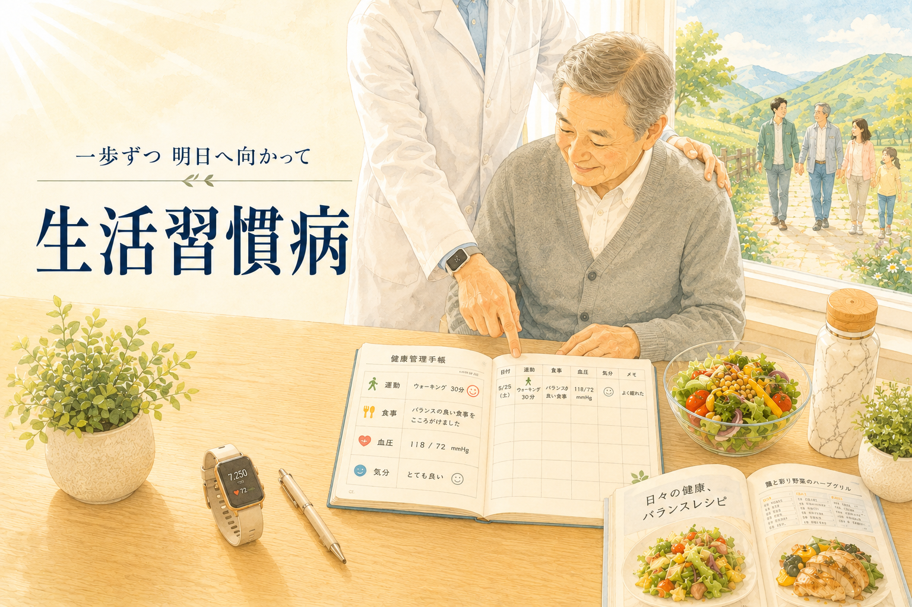

食事や運動、睡眠、たばこ、お酒などの毎日の生活習慣でおこる病気の総称が生活習慣病です。
対象疾患：糖尿病、脂質異常症、高血圧症、肥満症、メタボリックシンドローム、高尿酸血症 等
糖尿病
- 受診の目安：空腹時血糖値 126 mg/dL 以上／HbA1c 6.5% 以上
- どんな状態？：血液中の糖分が多い状態が続き、全身の細い血管をゆっくり傷つけている状態です。
- 受診のすすめ：早期から血糖値を適切にコントロールし始めることで、体へのダメージを防ぎ、これまで通りの元気に過ごせる期間を長く保てます。
脂質異常症
- 受診の目安：LDLコレステロール 140 mg/dL 以上／中性脂肪 150 mg/dL 以上
- どんな状態？：血液中のコレステロールや中性脂肪が増えすぎ、血管の内側にドロドロとした汚れが溜まりやすくなっている状態です。
- 受診のすすめ：数値を指摘されたら、お食事や運動を見直したりお薬の力を借りたりして、血液をサラサラな状態に戻してあげることが大切です。
高血圧症
- 受診の目安：診察室 140/90 mmHg 以上／家庭血圧 135/85 mmHg 以上
- どんな状態？：自覚症状がないまま血管に強い圧力がかかり続け、しなやかさが失われて固くもろくなっていく状態です。
- 受診のすすめ：「まだ症状がないから大丈夫」と思いがちですが、数値に変化が出た初期の段階からケアを始めることが将来の健康を守る一番の近道です。
肥満症
- 受診の目安：BMI 25.0 以上（＋高血圧や高血糖などの健康障害を伴う状態）
- どんな状態？：体重増加や内臓脂肪の蓄積によって体に不調や検査値の異常が生じ、治療が必要になっている状態です。
- 受診のすすめ：単なる見た目の問題ではなく「体からのサイン」として受け止め、負担の少ないペースで改善に取り組んでいきましょう。
メタボリックシンドローム
- 受診の目安：ウエスト（男性85cm以上／女性90cm以上）＋「血圧・血糖・脂質」のうち2つ以上が基準値超え
- どんな状態？：内臓脂肪の蓄積をベースに、血圧・血糖・脂質の数値が「少しずつ高め」に重なっている状態です。
- 受診のすすめ：一つひとつの変化は軽度に見えても、重なることで血管への負担が跳ね上がります。数値が深刻になる前の今が改善のチャンスです。
高尿酸血症
- 受診の目安：血清尿酸値 7.0 mg/dL 超
- どんな状態？：血液の中に溶けきれなくなった尿酸が溢れ出し、体内で結晶化し始めている状態です。
- 受診のすすめ：尿酸の結晶が関節や器官に留まって悪影響を及ぼす前に数値をおさえることで、激しい痛みの発作や臓器へのダメージを防げます。
一人で頑張りすぎない二人三脚の健康管理を
生活習慣病で大切なのは、日々のちょっとした積み重ねです。しかし、食事制限や運動を毎日続けるのは、決して簡単なことではありません。当院では、数値だけを診て改善を促すのではなく、皆さまのライフスタイルに合わせた無理のない継続を大切にし、適切な治療方針をご提案させていただきます。
超音波検査で内臓や血管の状態を継続的に経過観察
当院では、治療・管理上必要と判断した方には、生活習慣病に伴う病気の早期発見や重症化、合併症を防ぐ取り組みとして、定期的に超音波検査と精密血液検査を組み合わせ、患者さま一人ひとりに合わせた継続的な疾患管理・指導を行っています。